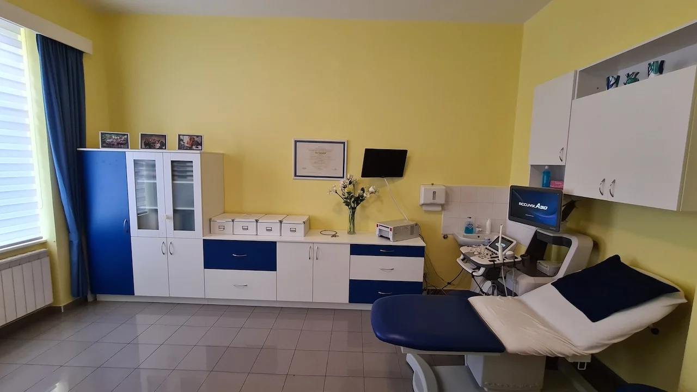
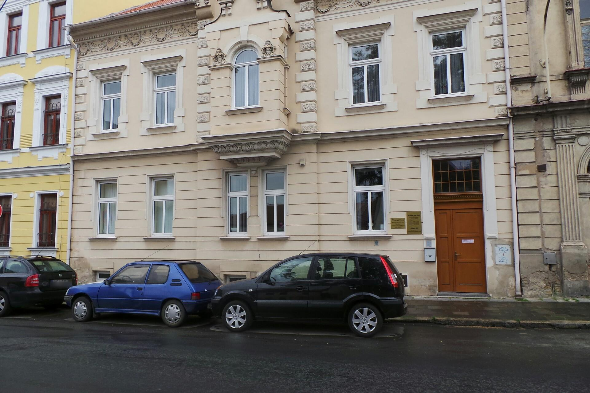

Moderní péče o ženské zdraví
Nabízíme komplexní a citlivý přístup v oblasti gynekologické prevence, léčby a porodnictví. V naší nově zrekonstruované ambulanci v Roudnici nad Labem se budete cítit bezpečně a komfortně.
Aktuality
Naše poskytované služby
Kliknutím na jednotlivé služby se dozvíte více informací. Poskytujeme plnou péči jak v gynekologii, tak i v porodnictví.
Gynekologie
Pravidelné preventivní prohlídky jsou základem zdraví každé ženy. Nabízíme komplexní vyšetření včetně onkologické cytologie a ultrazvukového vyšetření malé pánve s ohledem na maximální prevenci.
Poskytujeme diagnostiku a léčbu gynekologických onemocnění od běžných infekcí až po komplexnější obtíže s citlivým, vysoce individuálním přístupem ke každé naší pacientce.
V případě potřeby složitějších operativních zákroků úzce spolupracujeme s předními klinickými a specializovanými pracovišti. Vždy zajistíme plynulou a kvalitní navazující péči pro Vaše zdraví.
Pomůžeme Vám vybrat tu nejvhodnější formu antikoncepce přesně s ohledem na Váš věk, zdravotní stav, plány a životní styl. Předepisujeme a aplikujeme hormonální i moderní nehormonální varianty.
Porodnictví
Zajišťujeme komplexní ambulantní péči a vedení poradny pro budoucí maminky v průběhu celého těhotenství, a to včetně specializovaného sledování v případě rizikových těhotenství.
Ambulance je vybavena moderní ultrazvukovou technikou pro přesné sledování vývoje plodu. Zajišťujeme mimo jiné prvotrimestrální screening vrozených vad a podrobná morfologická vyšetření.
Pokud se Vám nedaří otěhotnět, provedeme u nás prvotní diagnostiku příčin a připravíme návrhy řešení. Následně zajišťujeme plynulou spolupráci se špičkovými specializovanými centry asistované reprodukce.
Klademe důraz na léčbu a včasné podchycení i drobných těhotenských komplikací. Máme velmi úzké navázání na přední okolní porodnice, kde můžeme zprostředkovat následnou péči při samotném porodu.
Průvodce prevencí
Zadejte svůj věk a zjistěte, na která preventivní vyšetření máte nárok v rámci veřejného zdravotního pojištění a v jakých intervalech.
Údaj o věku se nikam neodesílá – výpočet probíhá pouze ve vašem prohlížeči.
Doporučená vyšetření
0 vyšetření* Informace mají orientační charakter a vycházejí z doporučení hrazené péče v ČR. Konkrétní nárok a vhodnost vyšetření vždy konzultujte se svým lékařem nebo zdravotní pojišťovnou.
Naše ambulance
Prohlédněte si prostory naší moderní a vybavené kliniky.
(Doplňte src="..." u tagu img níže)

(Doplňte src="..." u tagu img níže)

Sjednejte si termín pohodlně a rychle
Zvolte si nejvhodnější čas návštěvy z pohodlí Vašeho domova. Náš moderní rezervační systém Reservio Vám umožní rychlý přehled volných termínů bez nutnosti volání.
- Nonstop dostupnost 24/7
- Přehled o volných časech
- Potvrzení ihned na e-mail
Online Rezervace
Kdy tu pro Vás jsme?
Náš specializovaný tým lékařů je pro vás plně k dispozici v těchto dnech.
Nejčastější otázky
Odpovědi na otázky, které nám kladete nejčastěji. Pokud zde nenajdete, co hledáte, neváhejte nás kontaktovat.
Doporučujeme první návštěvu gynekologie kolem 15–18 roku věku, nebo při zahájení pohlavního života. Gynekolog Vás provede prevencí a zodpoví veškeré Vaše otázky ohledně zdraví.
Ze zákona máte nárok na bezplatnou preventivní gynekologickou prohlídku jednou ročně. Pravidelné návštěvy jsou klíčem k včasnému záchytu případných problémů.
Nejčastějším příznakem je vynechání menstruace. Těhotenství potvrdí těhotenský test z lékárny nebo krevní test u lékaře. Dalšími příznaky mohou být únava, nevolnost nebo citlivá prsa.
Ideálně co nejdříve po pozitivním testu – nejpozději do 8. týdne těhotenství. Lékař potvrdí těhotenství ultrazvukem, provede potřebná vyšetření a zahájí vedení těhotenské poradny.
Preventivní prohlídka zahrnuje gynekologické vyšetření, odběr cytologie (stěr z čípku), ultrazvukové vyšetření malé pánve a prsu, a konzultaci o Vašem zdravotním stavu. V případě potřeby i vyšetření prsou.
Ideálně si naplánujte návštěvu mimo menstruaci. Nevykonávejte 24–48 hodin před prohlídkou pohlavní styk. Přineste si průkaz pojišťovny a seznam užívaných léků. Není třeba se speciálně připravovat.
Výběr antikoncepce záleží na Vašem věku, zdravotním stavu, životním stylu a plánech do budoucna. Nabízíme hormonální antikoncepci (pilulky, náplasti, kroužky), nitroděložní tělíska i nehormonální metody. Vše probereme při konzultaci.
Hormonální antikoncepce obsahuje syntetické hormony (estrogen a/nebo gestagen), které potlačují ovulaci, mění hlen v čípku a výstelku dělohy. Správně užívaná má spolehlivost přes 99 %.
Nepravidelná menstruace může mít mnoho příčin – stres, hormonální nerovnováhu, změnu váhy nebo onemocnění. Pokud nepravidelnosti trvají déle než 2–3 cykly, doporučujeme návštěvu naší ordinace pro bližší vyšetření.
Okamžitě vyhledejte pomoc při: silné bolesti v podbřišku, neobvyklém krvácení mimo menstruaci, příznacích zánětu (horečka, výtok se zápachem) nebo podezření na těhotenství v trubici.
Porod probíhá ve třech fázích: otevírací (dilatace čípku), vypuzovací (samotný porod dítěte) a poporodní (vypuzení placenty). Naše lékařky Vás na každou fázi připraví a zajistí bezpečný přechod do spolupracující porodnice.
Jeďte do porodnice, pokud máte pravidelné kontrakce každých 5 minut, odtekla Vám plodová voda, nebo máte silné krvácení. U rizikového těhotenství se řiďte pokyny Vašeho lékaře.
Objednání je nejjednodušší přes náš online rezervační systém Reservio, kde vidíte volné termíny a potvrzení přijde ihned na e-mail. Případně nám zavolejte na 416 838 186 nebo napište na gynekolog.ps@seznam.cz.
Ano! Aktuálně přijímáme nové pacientky. Zaregistrujte se jednoduše přes náš online rezervační systém nebo nás kontaktujte telefonicky. Těšíme se na Vás!
Kontaktujte nás
Máte otázky, nebo se chcete rovnou objednat k prohlídce? Zavolejte nám, nebo napište email. Jsme tu pro vás.